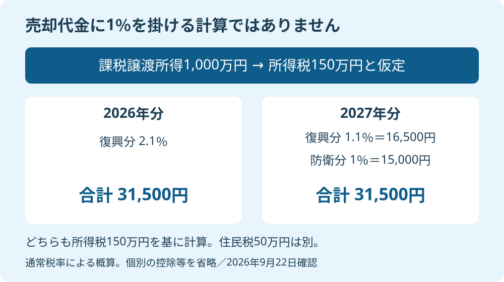

「2027年から新しい税金」と聞けば、実家の売却を2026年中に済ませたくなるかもしれません。ただ、税の名前が増えることと、家族の負担がその分増えることは、同じではありません。
大石浩之（磐田市／不動産業）です。宅地建物取引士として私が先に確かめたいのは、何％かよりも、何に掛ける率なのかです。2026年9月22日に財務省と国税庁の資料を照合しました。個人が土地・建物を売る通常の譲渡所得を中心に、年をまたぐ判断を整理します。
2027年に変わるのは、付加税2.1％の内訳
財務省「税率・税負担等に関する資料」の主要国比較の注2では、2027年分以後の復興特別所得税を基準所得税額の1.1％としています。同時に、防衛特別所得税が同じく基準所得税額の1％で始まります。足した率は2.1％です。
| 所得の年分 | 復興特別所得税 | 防衛特別所得税 | 付加税の合計 |
|---|---|---|---|
| 2026年分 | 2.1％ | なし | 2.1％ |
| 2027年分以後 | 1.1％ | 1％ | 2.1％ |
表の分母は、すべて基準所得税額です。ここでいう付加税は、所得税を計算した後、その税額を基に計算する税です。売却代金でも、売却益そのものでもありません。新しい1％だけを従来の2.1％に足す読み方では、復興特別所得税の引下げを見落とします。
国税庁の「復興特別所得税の源泉徴収」にも、2027年以後の改正で両税の合計税率は変わらないと明記されています。ただし、この資料は源泉徴収の説明です。実家売却の所得計算は、別の譲渡所得の資料と組み合わせて読みます。
私は、率と計算の基になる金額を公表資料で確認できる点を評価します。家族も仲介会社も、同じ数字から話せます。税名だけの見出しで判断せずに済む材料が、すでに出ています。
そのうえで注文したいのは、説明する側の見せ方です。「新税1％」だけを大きく出し、同時に下がる1％分を小さく扱えば、売主は急ぐべきだと受け取ります。私は二つの税を一つの表で示すべきだと考えます。
通常の長期20.315％・短期39.63％はどう計算するか
国税庁の通常の計算では、土地・建物の長期譲渡は所得税15％と住民税5％、短期譲渡は所得税30％と住民税9％です。財務省の付加税の率を当てはめると、2027年も通常の合計は長期20.315％、短期39.63％となります。
計算式は、長期が「15％×1.021＋5％」、短期が「30％×1.021＋9％」です。復興分と防衛分を合わせた2.1％は、所得税部分だけに掛けます。住民税を含む20％や39％に掛ける計算ではありません。
課税譲渡所得とは、売却収入から取得費、譲渡費用、適用できる特別控除を引いた金額です。取得費は購入時などの費用、譲渡費用は売るために直接かかった費用です。建物の取得費は減価償却、つまり使用や経過に応じた価値の減少分を反映します。

仮に、控除後の課税譲渡所得が1,000万円なら、長期の所得税は150万円です。2026年の付加税は150万円×2.1％＝3万1,500円。2027年は復興分1万6,500円と防衛分1万5,000円で、合計3万1,500円です。住民税50万円も合わせると203万1,500円となります。
これは税額控除などの個別事情を省いた概算です。軽減税率や特別控除、他の所得に関係する計算まで一律に不変と言うものではありません。今回確認した内訳変更だけでは、通常の合計率が上がらないという整理です。
なお、確認時点の国税庁の長期・短期譲渡ページには、復興特別所得税2.1％の従来の注記が残っています。2027年の内訳は財務省の改正後の記載で補っています。ページごとの説明範囲を分け、申告時には最新の手引きと税理士の確認を使ってください。
税の名前だけで年内売却を急がせない
2026年と2027年の売却を比べるとき、付加税より先に変化を確認したい条件があります。所有期間の区分、特例の適用期限、売却価格、売却までの支出です。同じ課税譲渡所得を前提にしなければ、年ごとの税負担は比較できません。
私はこう考えます。税の名前だけで売却を急がせるのは、雑な仕事です。家族が1％の意味を取り違えたまま値引きに応じれば、税負担が変わらないのに売却代金だけ減ることもあります。不動産屋が先にする仕事は、その誤解をほどくことです。
たとえば、年内引渡しを条件に売値を30万円下げる提案があるとします。これは仮定の交渉です。その30万円を受け入れる理由が「新税を避けるため」だけなら、私なら立ち止まります。待つ間の維持費や買主の条件を含め、30万円に見合う事情があるかを別に考えます。
私にも迷いはあります。税だけを見れば待てても、空き家の管理を続けるご家族には負担がある。その負担をゼロ扱いして「待つほうが得」とは言えません。だから税額、現金支出、片付けや立会いの担い手を分けて並べたいのです。
長期・短期は、売った年の1月1日時点で所有期間が5年を超えるかで分かれます。年が変わると区分が変わる家は、付加税の話とは別に検討します。判定の読み方は、譲渡所得の5年と1月1日の線引きで説明しています。取得日や売却年の個別判断は専門家に確認を。
磐田・袋井の実家は、取得費と手取りを先に並べる
磐田市・袋井市の実家を査定に出す場合も、税率は地域名で決まりません。家族の資料で確認するのは、購入時の契約書、売却に必要な費用、適用を相談したい控除です。住所と査定額だけでは、売主の税引後の手取りは確定できません。
私は、購入時の書類が見当たらないなら、家族で探す場所と担当を決めるよう案内します。税率表を何度読むより、取得費の根拠を一つ見つけるほうが見積りの精度につながる場合があります。見つからない段階で、都合のよい金額を記入してはいけません。
契約書だけでなく、購入時の精算書や工事の領収書も候補として分けて保管します。どれが取得費になるかは税理士に確認します。探し方は、実家の取得費と税金を確認する記事を使い、原本を捨てずに進めてください。
手取りの表には、売却見込額、仲介手数料などの支出、税金の概算を別の欄に置きます。税務上引ける費用と、家族が現金で払う支出は完全には一致しません。「払うお金だから全部税金から引ける」と思い込むと、生活費の予定もずれます。
売値より手取りで考える実家売却と合わせて、施設費や住み替え費用に回せる金額を確認します。富士ヶ丘サービスは磐田・袋井を中心に、介護と不動産を一体で相談できる窓口を設けています。私は家族が困らない売却のため、税の試算が未確定なら、その欄を未確定のまま共有します。
今日の確認は、2つの年の条件を一枚にする
今日できる準備は、2026年売却と2027年売却の条件を一枚の紙に並べることです。確定した数字、見積り、未確認を分けて書き、仲介会社と税理士で確認する欄を分担します。期限が分からない特例を、使える前提で手取りに入れないでください。
- 所有期間の判定に使う取得日と、契約・引渡しの予定を記す。
- 取得費の資料と、売却費用の見積りの有無を確認する。
- 控除や軽減税率の可否を専門家へ聞き、手取りを比較する。
私は、付加税の名前を理由に売る年を決めるのではなく、確認できた条件で案内します。今日、売却の結論まで出す必要はありません。年をまたいで何が変わり、何が変わらないかを一つ分けられれば、次の相談は具体的になります。税務・登記・相続の個別判断は専門家に確認を。